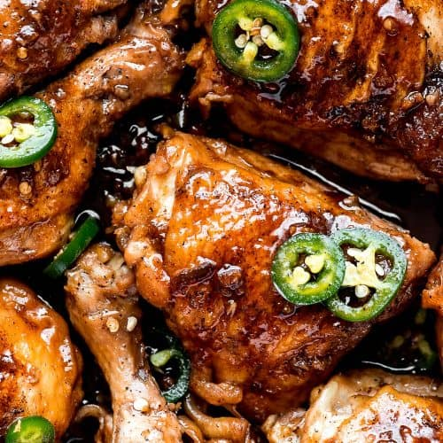

Chicken Adobo

Let's satisfy our chicken cravings by following the steps below!
Chicken adobo is a classic Filipino dish that's as savory as it is bright with acid, and it goes perfectly with a large
platter of garlic fried rice.
Ingredients
- 1 tablespoon (15ml) canola oil or other neutral oil
- 4 bone-in, skin-on chicken legs, separated into thighs and drumsticks (about 2 1/2 pounds; 1.15kg)
- Kosher salt
- 8 cloves garlic, thinly sliced
- 2 whole fresh bay leaves (or 3 whole dried bay leaves)
- 1 1/2 teaspoons whole black peppercorns
- 1 1/4 cups (300ml) water
- 1 cup (240ml) soy sauce
- 1 cup (240ml) rice vinegar (see notes)
- Steamed white rice or garlic fried rice, for serving
Steps
- In a heavy-bottomed pot or Dutch oven, heat oil over medium heat until shimmering. Blot chicken dry with paper towels,
then season lightly all over with salt.
- Working in batches if necessary, add chicken pieces to pot in a single layer, skin side down, making sure not to overcrowd the
pot. Cook until well browned, 6 to 7 minutes. Using tongs, flip chicken pieces and cook until lightly brown on the second
side, about 3 minutes. Transfer chicken to a plate and set aside.
- Add garlic, bay leaves, and peppercorns to now-empty pot and cook, stirring constantly, until mixture is very fragrant and
garlic turns a light golden color, about 30 seconds. Add water and stir with a wooden spoon, scraping up any brown bits on
the bottom of the pot. Add soy sauce and vinegar, return chicken pieces to pot, increase heat to high, and bring liquid to
a boil. Reduce heat to low, cover, and simmer until chicken is cooked through and tender, about 20 minutes, turning the chicken
pieces halfway through.
- To Serve: The chicken is best served after sitting overnight in the refrigerator, but it can also be served
immediately, with steamed white rice or (preferably) garlic fried rice. The chicken pieces can also be briefly broiled before
serving.
- To Broil Chicken Adobo: Adjust oven rack to 6 inches below broiler element and preheat broiler to high. Transfer
chicken pieces to a paper towel–lined rimmed baking sheet and blot surface with more paper towels to remove as much moisture as
possible; discard paper towels. Arrange chicken skin side up on the baking sheet and broil until chicken skin is crispy and
lightly charred, about 2 minutes (keep an eye on the chicken to ensure it does not burn). Serve immediately with steamed white
rice or (preferably) garlic fried rice, passing adobo sauce at the table.
Go back to Main Page